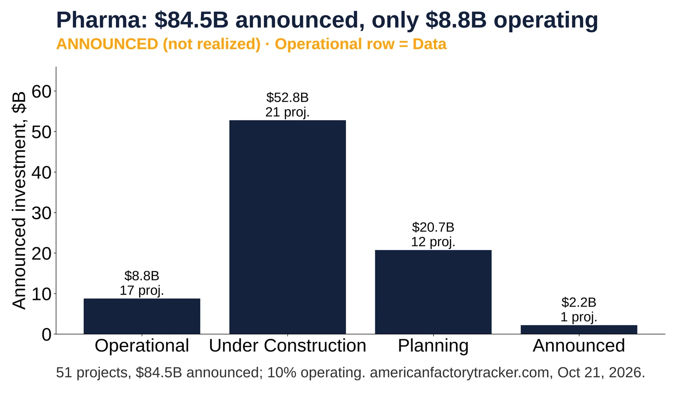
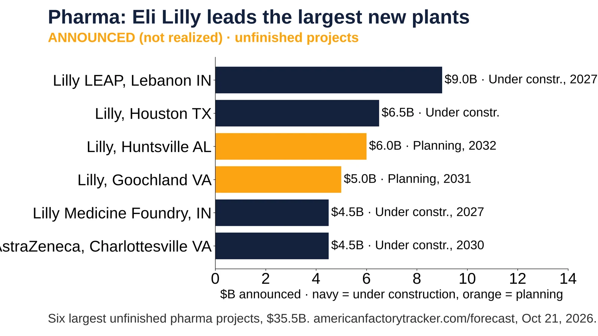
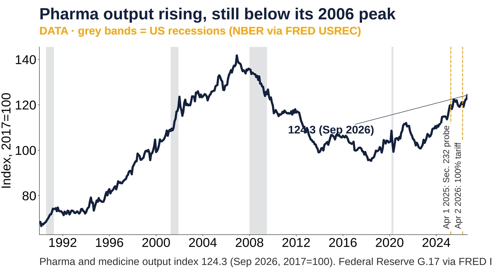

9. Pharmaceuticals

51 projects, $84.5B announced; 10% operating. americanfactorytracker.com, Oct 21, 2026.
Announced
- Oct 21, 2026: 51 pharma projects, $84.5B, 19,597 jobs (Announced) https://americanfactorytracker.com/analytics
- 21 under construction, $52.8B; 17 operating, $8.8B (Data/Announced) https://americanfactorytracker.com/forecast
- Apr 1, 2025: Section 232 pharma investigation opened https://www.federalregister.gov/documents/2025/04/16/2025-06587/notice-of-request-for-public-comments-on-section-232-national-security-investigation-of-imports-of
- Sep 25, 2025: 100% branded-drug tariff announced, plant builders exempt https://www.sullcrom.com/SullivanCromwell/_Assets/PDFs/Memos/More-US-Tariffs-Announced-Court-Upholds-China-Duties.pdf
Sources: https://americanfactorytracker.com/analytics https://americanfactorytracker.com/forecast

Six largest unfinished pharma projects, $35.5B. americanfactorytracker.com/forecast, Oct 21, 2026.
Announced
- Feb 26, 2025: Lilly plans $27B more US plants https://investor.lilly.com/news-releases/news-release-details/lilly-plans-more-double-us-manufacturing-investment-2020
- Lilly LEAP, Lebanon IN, $9.0B, under construction, opening 2027 (Announced) https://americanfactorytracker.com/forecast
- Lilly Huntsville AL $6.0B, planning, opening 2032 (Projection) https://americanfactorytracker.com/forecast
- AstraZeneca Charlottesville VA $4.5B, opening 2030 (Projection) https://americanfactorytracker.com/forecast

Pharma and medicine output index 124.3 (Sep 2026, 2017=100). Federal Reserve G.17 via FRED IPG3254S.
Data
- Dec 2006: output peak 141.7 (Data) https://fred.stlouisfed.org/series/IPG3254S
- Jan 2025: 115.3; Sep 2026: 124.3 (Data) https://fred.stlouisfed.org/series/IPG3254S
- Apr 1, 2025: Section 232 pharma investigation opened https://www.bis.gov/about-bis/bis-leadership-and-offices/SIES/section-232-investigations
- Apr 2, 2026: 100% patented-drug tariff proclaimed; 20% for onshoring firms https://www.federalregister.gov/documents/2026/04/09/2026-06956/adjusting-imports-of-pharmaceuticals-and-pharmaceutical-ingredients-into-the-united-states
Sources: https://fred.stlouisfed.org/series/IPG3254S https://fred.stlouisfed.org/series/USREC